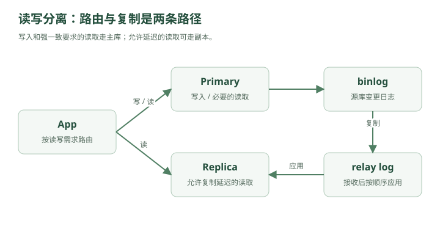

林默原本以为，Redis 上线之后，系统终于轻松了。
现在架构是：
┌→ App A
用户 → Load Balancer ─┼→ App B
└→ App C
│
▼
Redis
│
▼
MySQL
大多数热点查询都被 Redis 挡住了。
MySQL 压力确实下降了。
林默看着监控：
CPU：35%
连接数：正常
慢查询：很少
“这次总该稳了吧？”
老周没说话。
三天后。
事故来了。
一、不是所有请求都能被缓存
有些数据适合缓存。
比如：
用户昵称
商品详情
热门文章
配置项
因为它们：
读很多
写很少
但有些数据不一样。
比如订单。
用户打开：
我的订单
可能必须看到最新状态：
待支付
已支付
已发货
已签收
库存也是：
100
99
98
97
这种数据如果缓存几分钟，很可能出问题。
所以大量请求最终还是要查 MySQL。
二、系统开始出现“读多写少”
老周调出了数据库监控：
SELECT QPS：18000
INSERT/UPDATE QPS：1200
林默一看：
“读请求比写请求多十几倍。”
这其实非常常见。
比如电商商品：
1 次修改商品价格
可能对应
100000 次商品详情查看
社交网站：
1 次发动态
对应
大量用户阅读
所以很多互联网系统都有一个明显特征：
读多，写少。
林默问：
“那是不是可以把读请求分散出去？”
老周：
“对。”
三、第二台 MySQL 出现了
老周画：
写
App ─────────────→ MySQL Master
│
│ 复制
▼
MySQL Slave
↑
│
读
这就是：
主从复制
Master-Slave Replication。
后来也常叫：
Primary
Replica
主库负责：
INSERT
UPDATE
DELETE
从库主要负责：
SELECT
于是原本：
18000 SELECT
1200 WRITE
全部打主库
现在变成：
主库：
1200 WRITE
部分 SELECT
从库：
大量 SELECT
主库压力显著下降。
四、数据怎么从主库跑到从库？
林默有点疑惑：
“主库写完数据，从库怎么知道？”
老周说：
“靠日志。”
MySQL 主库每次修改数据时，会记录：
binlog
Binary Log。
比如：
用户余额：
100 → 80
主库不仅修改数据，还写 binlog。
可以粗略理解为：
UPDATE account
SET balance = 80
WHERE id = 9527;
然后从库获取这些日志，再重放。这里的 SQL 用来说明变化；binlog 可以采用语句、行或混合格式，行格式记录的是行变化，并不总是保存这条 SQL。
于是：
主库执行一次修改
↓
写 binlog
↓
从库读取
↓
从库执行同样变化
最终：
Master
balance = 80
Slave
balance = 80
所以主从复制的本质其实就是：
主库把“我发生了什么变化”告诉从库，从库照着再做一遍。
五、那为什么不直接让两台数据库都能写？
林默想得很自然：
“既然两台数据库都有完整数据，那两边都能写不是更快？”
比如：
App A → DB A
App B → DB B
老周问：
“如果两边同时修改同一条数据呢？”
比如账户余额原来：
100
请求一：
DB A：扣 20
请求二：
DB B：扣 30
同时发生。
那最后应该是多少？
50
但如果双方独立写：
DB A：80
DB B：70
然后互相同步。
谁覆盖谁？
冲突怎么解决？
林默开始头疼。
老周说：
“写操作最难的地方，不是性能，而是一致性。”
所以很多架构先选择：
一个主库统一写
多个从库负责读
把写冲突问题先规避掉。
六、读写分离正式出现
随着流量继续增加，系统变成：

查看文字版示意
App → DB Router ── 写 / 必要的读 ─→ Primary
└─ 允许延迟的读 ─→ Replica
Primary ── binlog 复制 / relay log 应用 ─→ Replica
写请求：
INSERT
UPDATE
DELETE
发给：
Master
读请求：
SELECT
发给：
Slave
这就是：
读写分离
Read-Write Splitting。
七、从库也可以水平扩展
如果查询越来越多：
Slave 1 扛不住
怎么办？
加：
Slave 2
Slave 3
Slave 4
变成：
┌→ Replica A
Primary ─────────┼→ Replica B
├→ Replica C
└→ Replica D
读请求：
8000 QPS
可以平均：
A：2000
B：2000
C：2000
D：2000
你会发现又回到了第一章那个规律：
一台扛不住，就增加机器，把压力分散出去。
只不过这次扩展的不是 App。
而是数据库读取能力。
八、但新的 Bug 马上出现
某天，用户修改昵称。
原来：
小明
改成：
林默天下第一
请求：
UPDATE user
SET name = '林默天下第一'
WHERE id = 9527;
写到了主库。
主库：
name = 林默天下第一
然后前端立刻跳转个人主页。
页面查询：
SELECT name
FROM user
WHERE id = 9527;
这次读请求被发到从库。
结果从库返回：
小明
用户：
“？？？”
刷新一下。
又变成：
林默天下第一
九、主从延迟
林默急了：
“从库不是复制主库的吗？”
老周：
“复制需要时间。”
比如：
10:00:00.000
主库写成功
10:00:00.020
binlog 发送
10:00:00.050
从库开始应用
10:00:00.080
从库完成
这中间几十毫秒：
主库：新数据
从库：旧数据
这就是：
Replication Lag
主从复制延迟。
如果系统压力大，可能不是几十毫秒。
甚至：
几百毫秒
几秒
几十秒
十、这意味着什么？
读写分离并不是免费午餐。
你获得：
更强的读能力
但付出的代价是：
短时间的数据不一致
也就是说：
写成功
≠
所有数据库节点立刻看到最新数据
这就是分布式系统里非常核心的一个词：
最终一致性
Eventual Consistency。
意思是：
短时间内可以不一致，但最终会一致。
十一、所有数据都能接受最终一致吗？
老周问林默：
“头像更新后，几百毫秒看到旧头像，能接受吗？”
“能。”
“点赞数差一点？”
“很多时候也能。”
“银行余额呢？”
林默：
“不能。”
“库存扣减呢？”
“不能随便旧。”
于是林默终于意识到：
一致性不是越强越好，而是看业务。
不同数据要求不同。
例如：
昵称、头像
→ 可以接受短暂延迟
评论数、点赞数
→ 通常可以最终一致
订单状态
→ 要更谨慎
余额、支付
→ 通常要求强一致或更强保证
十二、那“写完马上读”怎么办？
这个问题叫：
Read Your Writes
读己之写。
用户自己刚刚修改的数据，通常希望自己马上能看到。
常见方案之一：
刚写完之后的一段时间
强制读主库
例如：
用户修改昵称
↓
写 Primary
↓
接下来 1 秒内查询本人信息
↓
直接查 Primary
其他普通查询：
查 Replica
这样既能：
保证关键场景一致
又不会：
所有读请求都压主库
十三、另一种方案：关键查询直接读主库
比如：
支付后查询订单状态
这个场景很关键。
可以直接：
写主库
↓
读主库
而普通历史订单列表：
读从库
这就是系统设计里常见的思想：
不要追求全局统一策略，而是针对不同业务做取舍。
十四、然后主库挂了
某天凌晨。
报警响了。
Primary DOWN
林默瞬间坐起来。
从库都还活着。
但问题是：
SELECT 还能做
可是：
INSERT
UPDATE
DELETE
全部失败。
用户：
不能下单
不能支付
不能发帖
整个系统几乎瘫痪。
林默问：
“不是有从库吗？选一个顶上不行？”
老周：
“对，这就是下一步。”
十五、主从切换
原本：
Primary
│
├→ Replica A
└→ Replica B
Primary 挂掉后：
Replica A
被提升为：
New Primary
然后：
New Primary
│
└→ Replica B
这叫：
Failover
故障转移。
系统自动：
发现主库挂了
↓
选择一个从库
↓
提升为新主库
↓
应用连接到新主库
这就是高可用设计的一部分。
十六、但切主也不是那么简单
假设：
主库刚写入订单 A
但这个 binlog 还没同步到 Replica A。
突然主库断电。
Replica A 被提升成主库。
结果：
订单 A
在新主库上不存在。
林默：
“数据丢了？”
老周：
“有可能。”
这就是复制模式中的一个核心权衡。
十七、同步复制和异步复制
最简单的是：
异步复制
主库：
数据写成功
↓
直接返回客户端成功
↓
之后慢慢同步从库
优点：
快
缺点：
主库突然挂
可能丢少量数据
另一种思路：
同步复制
主库：
写数据
↓
等从库确认
↓
再返回成功
优点：
数据更安全
缺点：
写入更慢
因为每次写都需要等待网络和从库。
MySQL 半同步复制等待至少指定数量的副本确认事件已写入并刷盘到 relay log，不要求副本已经执行事务。因此，半同步并不等于读副本没有延迟；等待超时后还可能退回异步复制。故障切换也需要独立的检测、选主、旧主隔离和流量切换机制。
这些方案，本质都是在：
性能
和
可靠性
之间找平衡。
十八、系统设计里最重要的思维开始出现了
林默突然发现：
每一种架构升级都不是纯赚。
比如：
加 Redis
获得：
性能
付出：
缓存一致性复杂度
加主从
获得：
读性能
高可用
付出：
复制延迟
一致性问题
运维复杂度
异步复制
获得：
低延迟
付出：
故障时可能丢数据
同步复制
获得：
更强可靠性
付出：
更高延迟
老周说：
“真正的系统设计不是找完美方案。”
“因为完美方案通常不存在。”
而是在性能、成本、一致性、可用性、复杂度之间做取舍。
十九、可是从库加再多，也解决不了一个问题
几年后。
业务继续增长。
系统现在有：
1亿用户
用户表：
100000000 行
订单表：
20亿行
即使读请求可以：
Replica 1
Replica 2
Replica 3
...
但写请求依然必须：
→ Primary
一天产生：
5000万条订单数据
主库开始出现：
磁盘越来越大
索引越来越大
备份越来越慢
DDL 越来越危险
写 QPS 越来越高
林默想：
“那我继续加从库？”
老周摇头。
“从库只能扩展读。”
“你的问题现在是——”
他在白板写：
单库本身太大了
以及：
单主写入能力达到上限
这次已经不是：
多复制几份
能解决的。
需要把：
一个数据库
真正拆成：
多个数据库
林默看到这里，已经隐约猜到了那个以前面试最讨厌的问题。
老周写下四个字：
分库分表
第三章结束
现在系统已经进化成：
┌→ App 1
用户 → Load Balancer ──────┼→ App 2
└→ App 3
│
┌─────┴─────┐
│ │
Redis DB Router
│
┌───────────┴──────────┐
▼ ▼
Primary Replicas
│ ┌────┼────┐
│ ▼ ▼ ▼
└────────────→ R1 R2 R3
这一章真正需要记住的链条是：
单库压力大
↓
发现读多写少
↓
主从复制
↓
读写分离
↓
读能力水平扩展
↓
主从延迟
↓
最终一致性
↓
关键请求读主库
↓
主库单点
↓
Failover
↓
同步/异步复制取舍
↓
最后发现写能力和数据量仍然有极限
↓
分库分表
以后面试官问：
“为什么要做 MySQL 主从？”
最好不要只回答：
“为了读写分离。”
完整逻辑应该是：
单库读压力过大时，可以通过主从复制增加多个只读副本，将大量查询请求分散到从库，从而提升读吞吐，同时从库也可以用于故障转移和提高可用性。但代价是存在复制延迟，所以系统需要根据业务的一致性要求决定哪些请求读主库、哪些可以读从库。
下一章就是系统设计里第一次真正进入“很像大厂架构”的部分：
下一章：一张订单表塞进了 20 亿行——分库分表与一致性哈希
会把 为什么分表、为什么分库、水平拆分、垂直拆分、按 userId 取模、扩容为什么会翻车、一致性哈希、全局 ID、跨库查询 全部通过同一个事故串起来。
行，下一章。